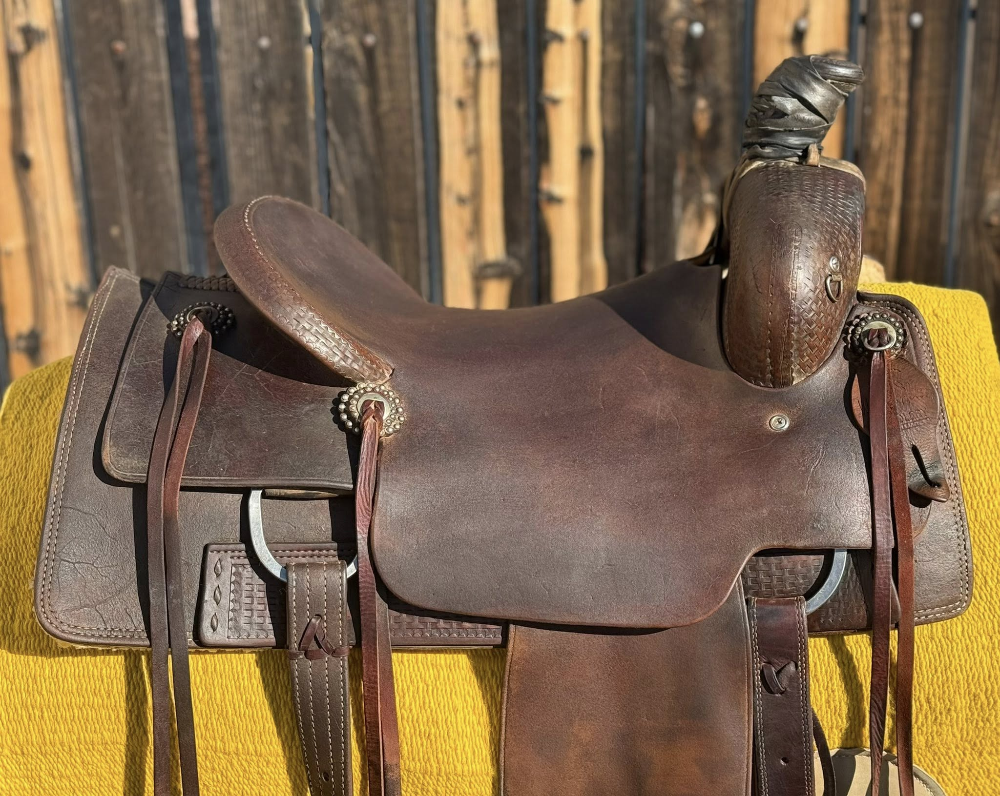
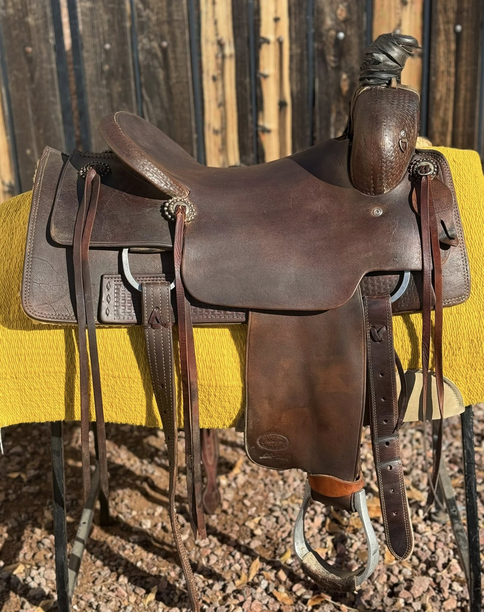
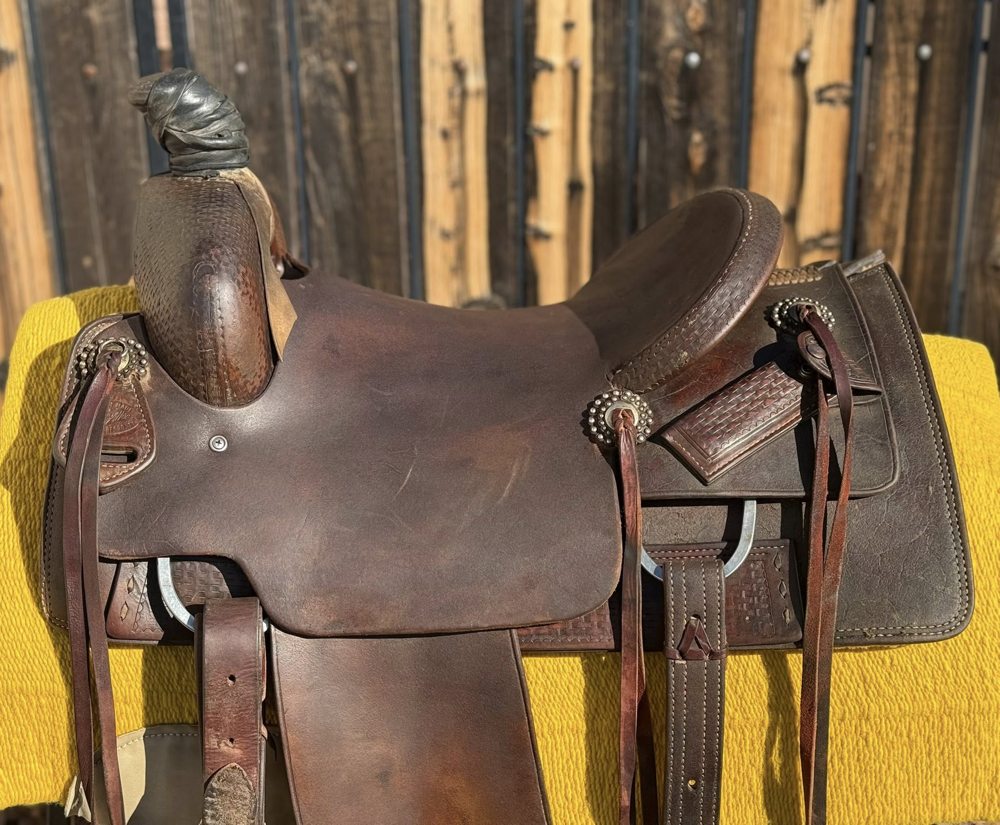
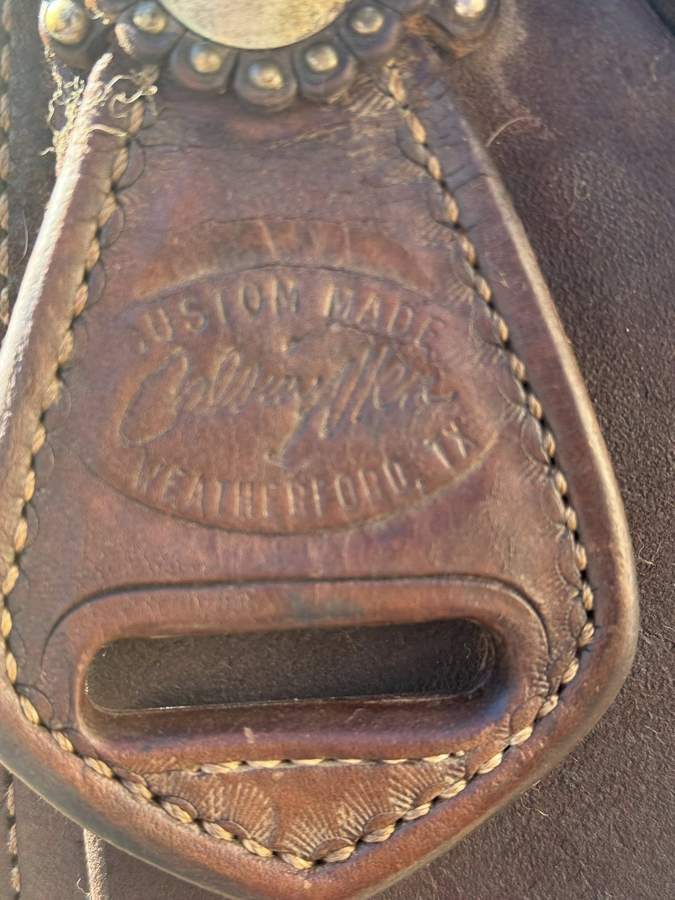
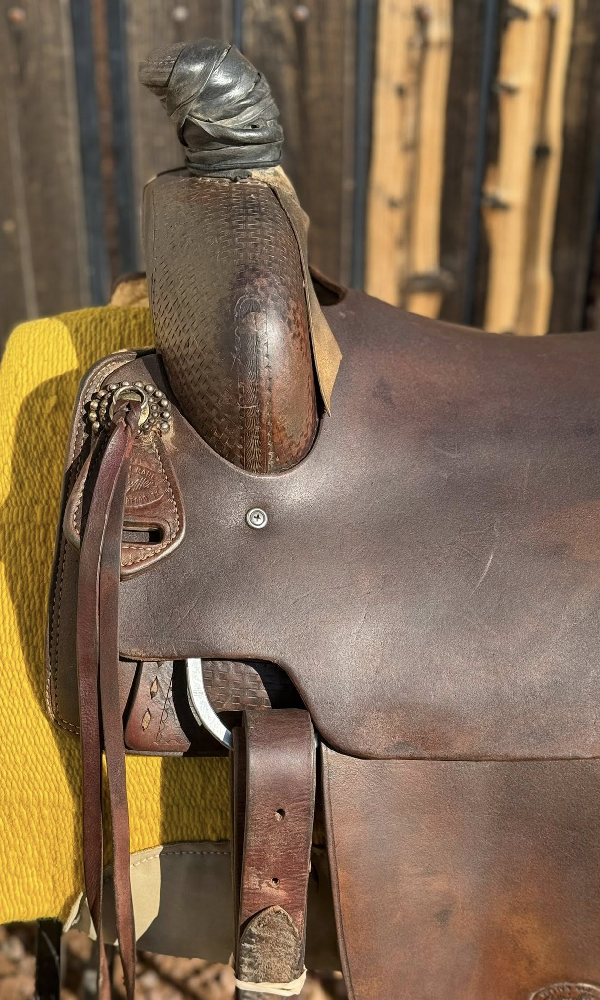
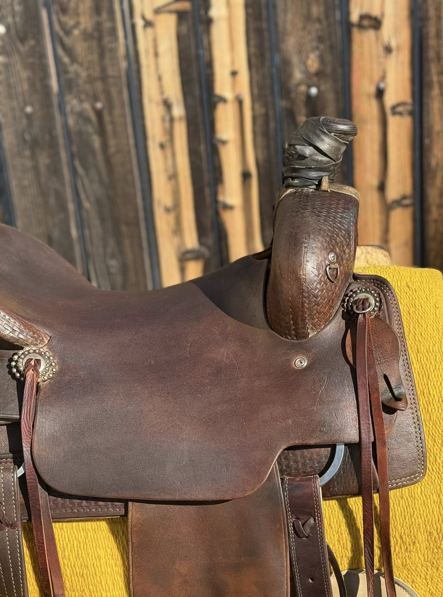
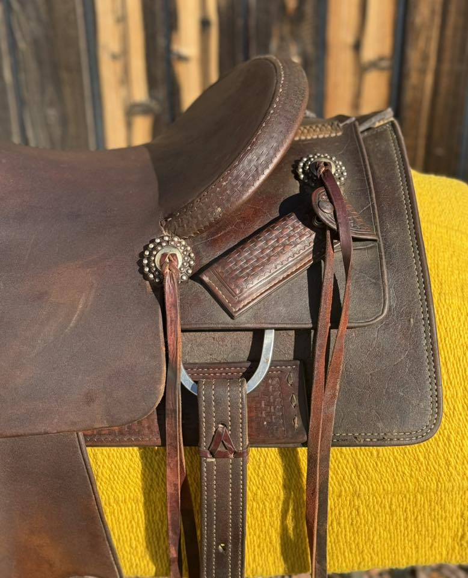
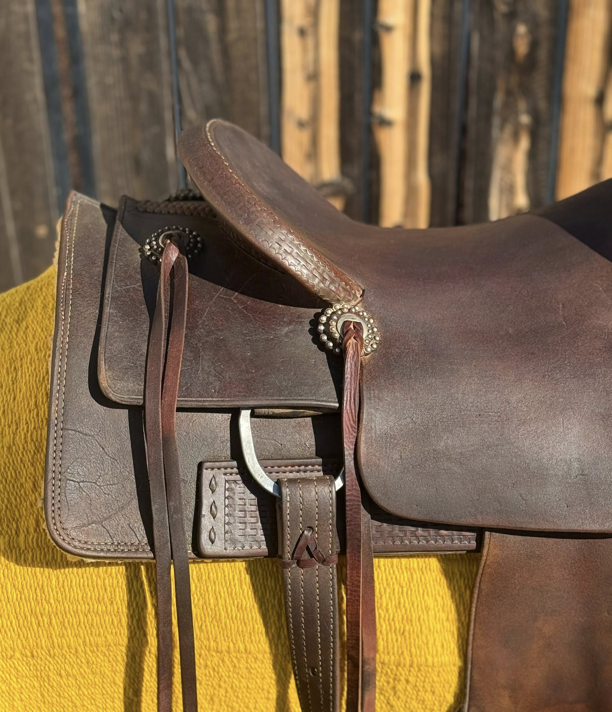
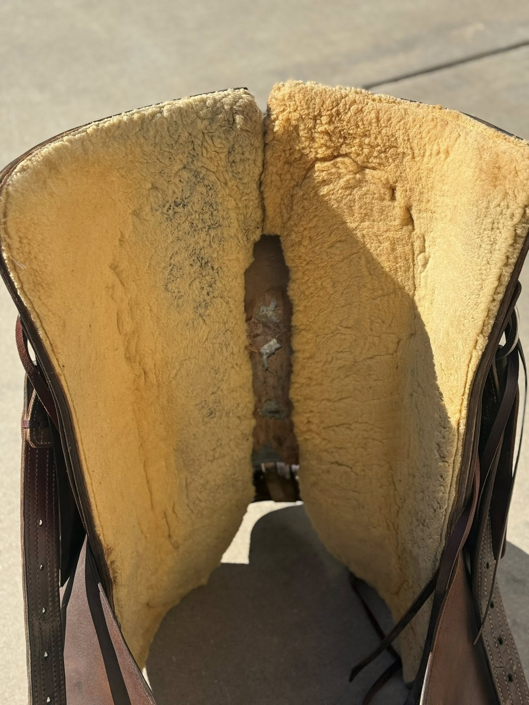

Ranch Cutter by Calvin Allen Saddlery — 15½" Seat
$1,995
| Maker | Calvin Allen Saddlery — Weatherford, TX |
|---|---|
| Seat Size | 15½" |
| Tree Width | Contact for fit details |
| Leather | Dark chocolate/espresso oiled |
| Tooling | Basketweave throughout |
| Hardware | Antiqued berry conchos |
| Horn | Braided rawhide wrap |
| Lining | Woolskin |
| Condition | Well-used working saddle |
Calvin Allen Saddlery out of Weatherford, Texas has a reputation for building honest, functional western saddles that hold up to hard use. This Ranch Cutter is a testament to that — dark espresso-oiled leather with full basketweave tooling, a braided rawhide horn wrap, and antiqued berry conchos. The woolskin lining is intact and shows even contact. The stamp clearly reads "Custom Made / Calvin Allen / Weatherford, TX."
This is a well-used saddle priced to move — a strong candidate for the rider who needs a solid, no-frills ranch or cutting platform at a working-person's price. Honest condition, honest price.
Shipping available. David ships nationwide. Contact for a quote to your zip code.
Inspected & certified by David Solum — 40+ years in reining saddles
Inquire About This Saddle